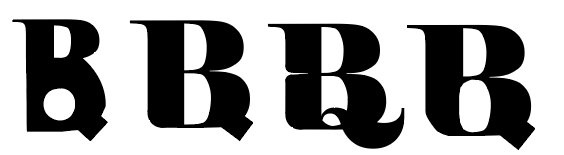
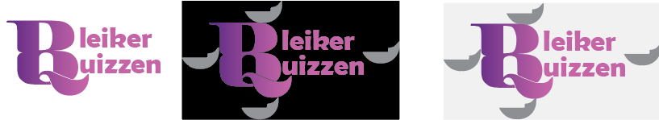

Denne siden presenterer den grafiske profilen for prosjektet. Den visuelle identiteten er utviklet for å skape et helhetlig og gjenkjennelig uttrykk, og bygger på bevisste valg innen logo, farger og typografi. Sammen skal disse elementene formidle ønsket stil og budskap, og bidra til et tydelig visuelt uttrykk på tvers av ulike flater.


HEX: #664980, CMYK: 20%, 43%, 0%, 50%, RGB: rgb(102, 73, 128)
HEX: #d57eb9, CMYK: 0%, 41%, 13%, 16%, RGB: rgb(213, 126, 185)
Elephant Regular
Berlin Sans FB Demi Bolds